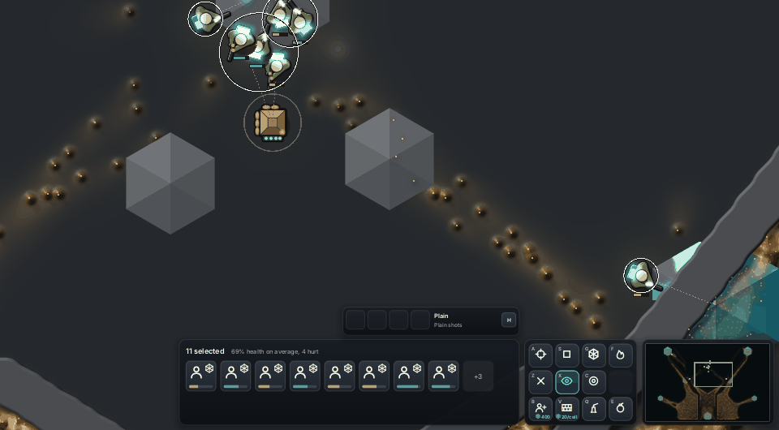
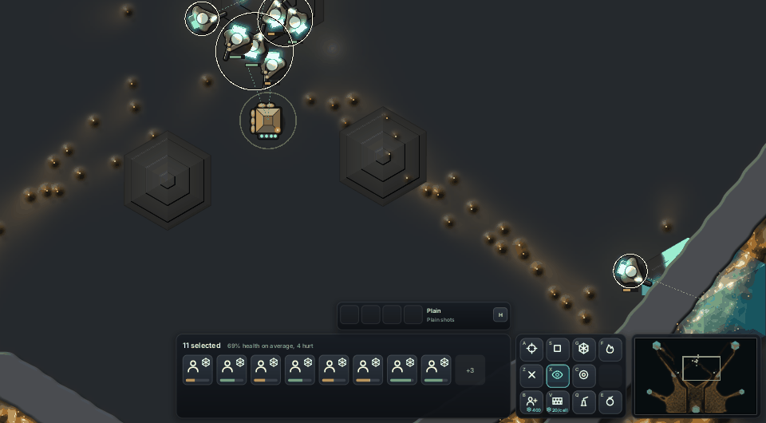
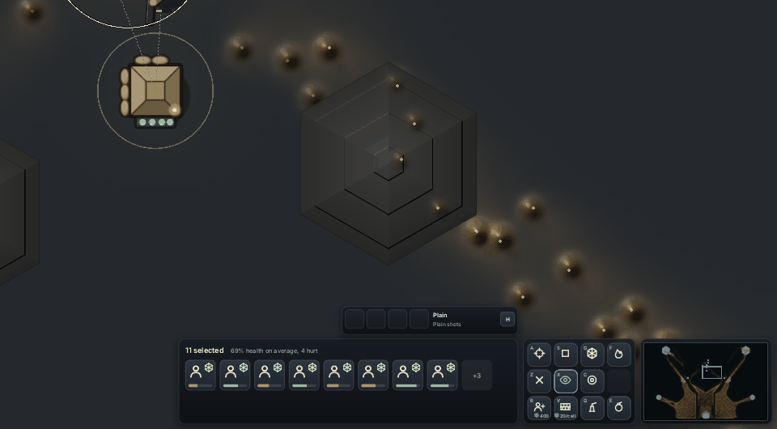

A crystal harvested dry used to be a big flat grey hexagon that read like a UI block. Now it turns into worn stone: darker than the rock around it, matte, lower, and stepped in three terraces taken from its depth field. Each step's riser catches the light on one side and is shaded on the other. The steps only come in as the charge goes, so a live crystal stays clean cyan glass and nothing spent competes with it.
The crystals by the larder, 30 to 65 game seconds, as the squad harvests them dry. Before is main.



Spent albedo (66,66,64) x (0.6 + 0.3 depth), before a flat (84,88,92). Highlight 8% when dry (25% before). Height 10% of a full crystal (15% before). Three terraces, risers two pixels wide. Tried and dropped: dark seams on a flat face, which read as a target. Cost: crystal pixels only, not measurable.